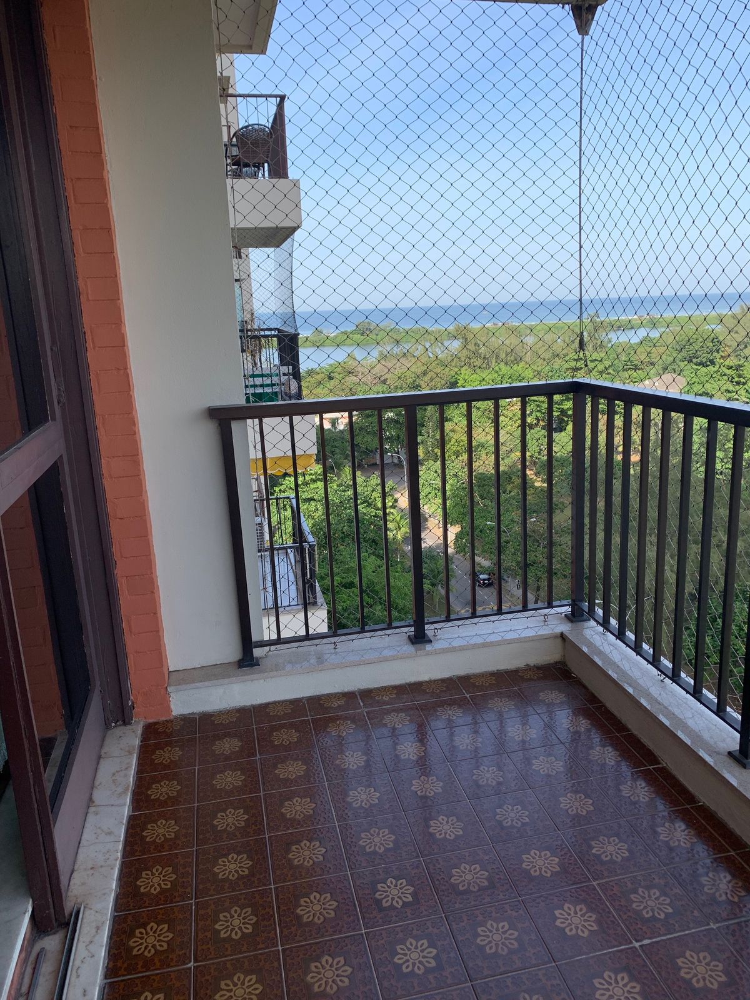
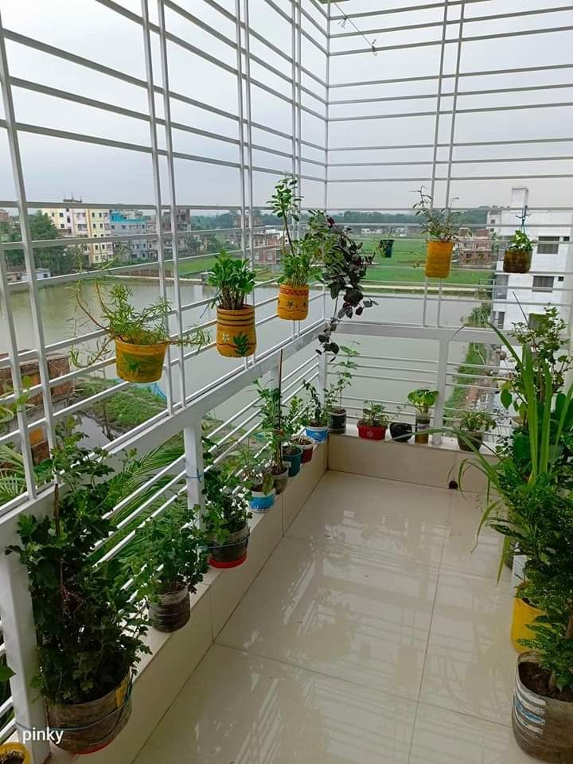

Get the best balcony safety nets in marathahalli Bengaluru for children, pets and family safety. We provide durable, high-quality net installation services with trained professionals at affordable prices across Bangalore.

SSDJ Safety Nets provides high-quality balcony safety nets in MarathahalliBengaluru, designed for apartments, high-rise buildings, and independent houses. Our professional safety net installation services ensure complete protection for children, pets, and elders while maintaining proper ventilation and balcony aesthetics. We offer durable, weather-resistant, and affordable safety net solutions across Bangalore.
SSDJ Safety Nets provides high-quality balcony safety nets near me in Marathahalli Bengaluru for apartments, homes, and high-rise buildings.
If you are searching for balcony safety nets near Marathahalli or child safety nets near me, our nets give complete protection for your family.
Our balcony safety nets help prevent accidental falls and protect children, pets, and elderly people at home.
We use strong and weather-resistant materials. Customers looking for durable balcony nets near me or invisible safety nets near Marathahalli can trust our quality.
These nets do not block airflow or affect your balcony appearance, making them perfect for modern homes.
We provide professional balcony safety nets installation near Marathahalli with secure fixing and neat finishing.
Our services are available for apartments, villas, and commercial buildings across Marathahalli Bengaluru.
SSDJ Safety Nets is trusted by customers searching for best balcony safety nets near me and affordable safety nets near Marathahalli.
Choose SSDJ Safety Nets if you are looking for balcony protection nets near me or safety nets services near Marathahalli.

SSDJ Safety Nets is a trusted provider of balcony safety nets in Bengaluru, offering professional installation services for apartments, homes, and commercial spaces. With years of experience in Bangalore, we focus on safety, quality, and customer satisfaction. Our safety nets are strong, transparent, weather-resistant, and designed for long-lasting protection.
SSDJ Safety Nets provides professional balcony safety net installation services across all areas of Bengaluru, including apartments, independent houses, and commercial spaces. We offer high-quality, durable, and weather-resistant safety nets designed to ensure protection from birds, prevent accidental falls, and maintain a safe environment for children and pets. Our expert team delivers reliable, affordable, and long-lasting solutions with quick installation services throughout Bangalore.
Looking for reliable balcony safety nets in Marathahalli Bengaluru? Simhadri Safety Nets provides professional safety net installation services for apartments, homes, and commercial buildings across Bangalore. Fill out the form and our team will contact you shortly for a free site inspection and quote.
